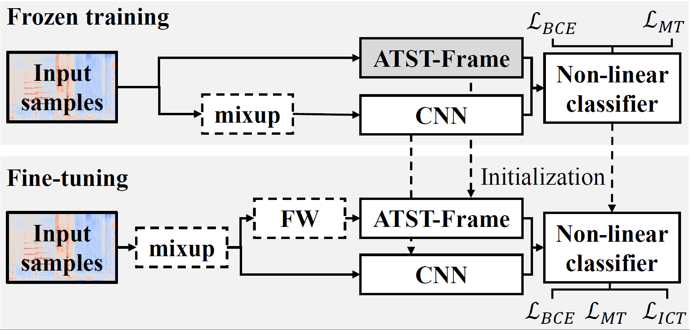
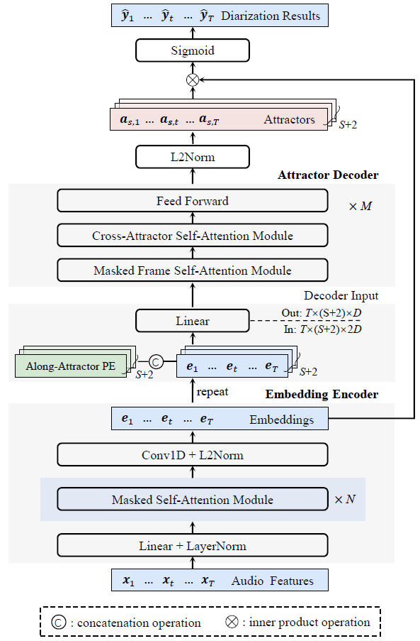
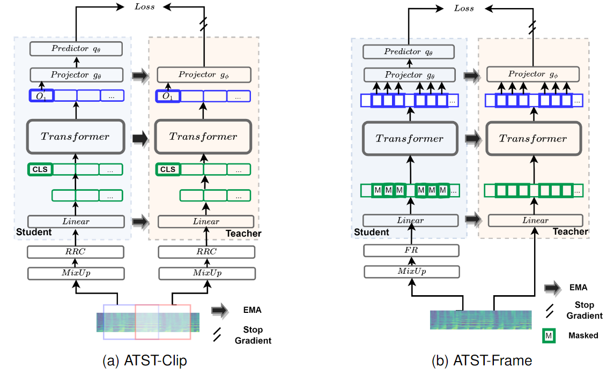
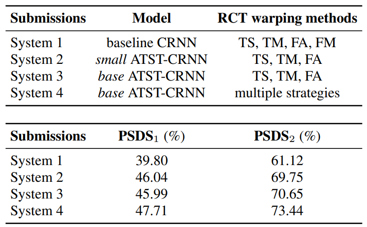

Latest Research Notes
View all →
ICASSP 2024
Fine-tune the Pretrained ATST Model for Sound Event Detection

ICASSP 2024
Frame-wise Streaming End-to-end Speaker Diarization

Preprint
Self-supervised Audio Teacher-Student Transformer

Tutorial
Downloading REAL SUPERVISED waveforms for DESED

Preprint